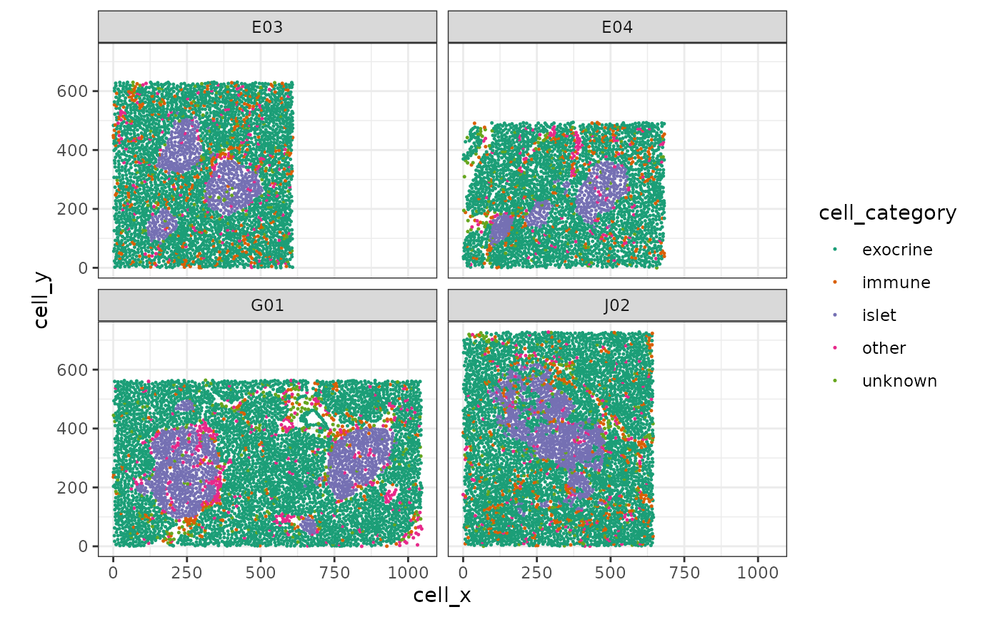
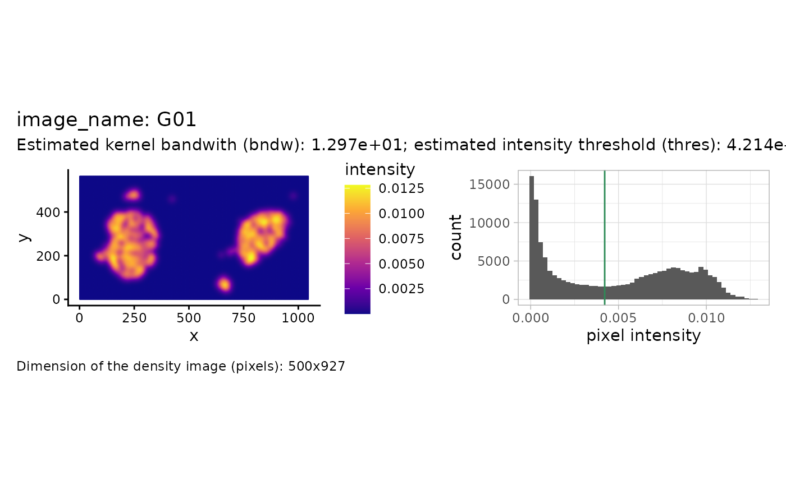
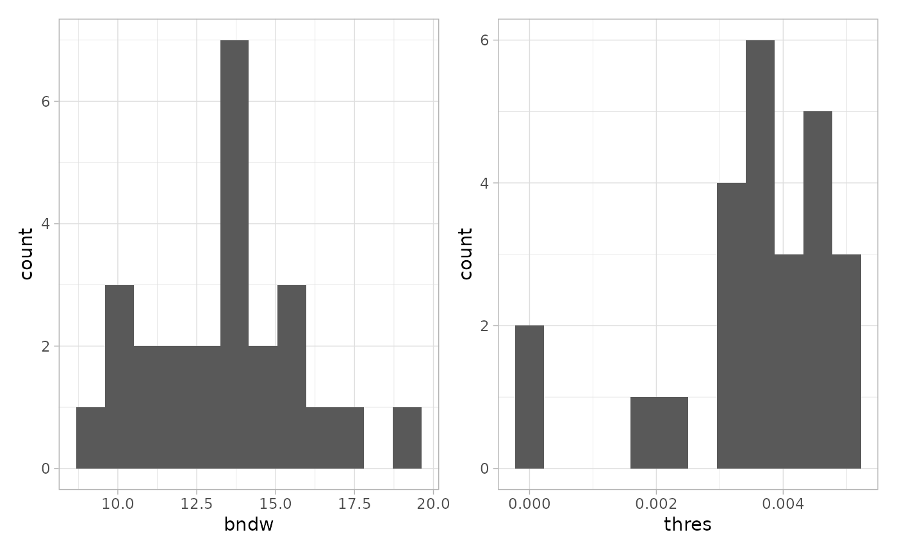
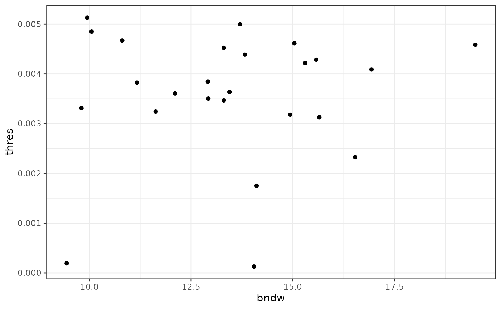
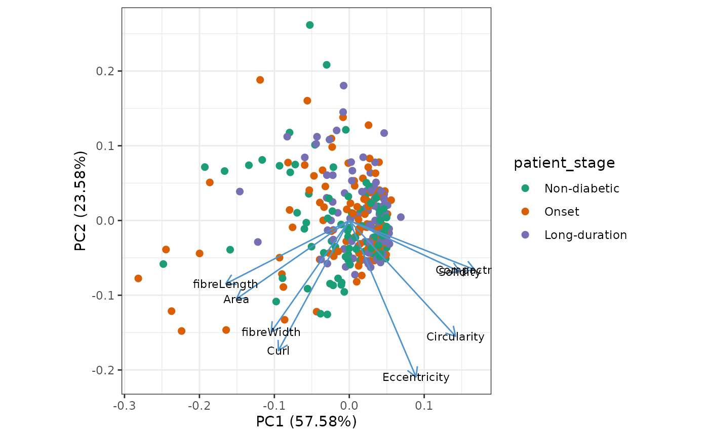
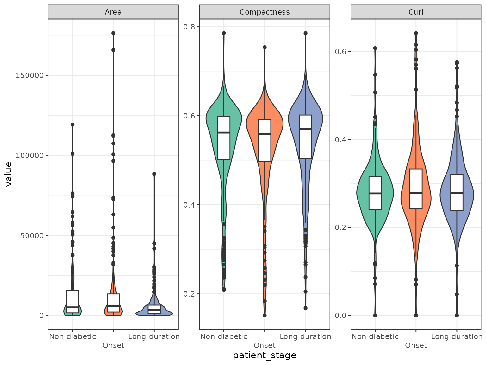
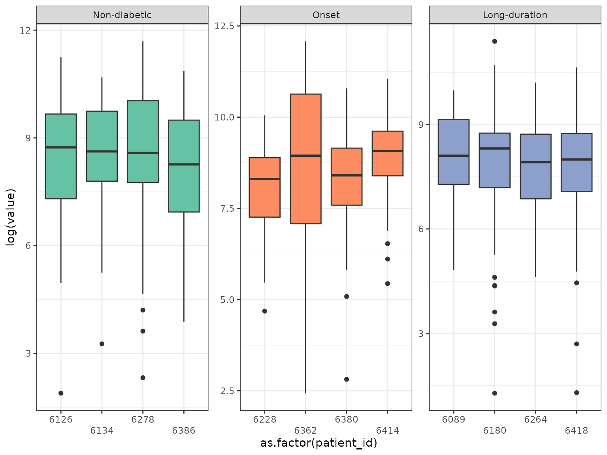
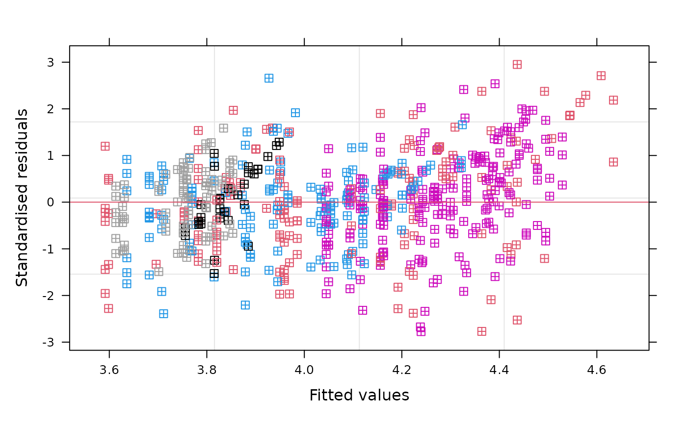

02 -- Reconstruction and analysis of pancreatic islets from IMC data
Samuel Gunz
Department of Molecular Life Sciences, University of Zurich, SwitzerlandSIB Swiss Institute of Bioinformatics, University of Zurich, Switzerlandsamuel.gunz@uzh.ch
Mark D. Robinson
Department of Molecular Life Sciences, University of Zurich, SwitzerlandSIB Swiss Institute of Bioinformatics, University of Zurich, SwitzerlandSource:
vignettes/ImcDiabetesIsletsVignette.Rmd
ImcDiabetesIsletsVignette.RmdAbstract
In this vignette we use sosta to reconstruct
pancreatic islets of different diabetic stages from IMC data (Damond et al. 2019). Based on the
reconstruction we calculate structure metrics. Finally, we show
how to do staticstical comparison of the metrics accounting for
the correlation structure of the dataset.
Installation
The sosta package can be installed from Bioconductor as follows:
if (!requireNamespace("BiocManager")) {
install.packages("BiocManager")
}
BiocManager::install("sosta")Introduction
In this vignette, we will use an imaging mass cytometry (IMC) dataset of pancreatic islets from human donors at different stages of type 1 diabetes (T1D) and healthy controls (Damond et al. 2019).
First, we plot the data for illustration. As we have multiple images per patient, we will subset to a few slides. As can be seen, the dimensions of the field of view are differing.
df <- cbind(
colData(spe[, spe$image_name %in% c("E04", "E03", "G01", "J02")]),
spatialCoords(spe[, spe$image_name %in% c("E04", "E03", "G01", "J02")])
)
df |>
as.data.frame() |>
ggplot(aes(x = cell_x, y = cell_y, color = cell_category)) +
geom_point(size = 0.25) +
facet_wrap(~image_name, ncol = 2) +
coord_equal() +
scale_color_brewer(palette = "Dark2")
Our goal is to reconstruct / segment and quantify the pancreatic islets.
Reconstruction of pancreatic islets
Reconstruction of pancreatic islets for one image
In this example, we will reconstruct the islets based on the point pattern density of the islet cells. We will start with estimating the parameters that we use for reconstruction afterwards. For one image this can be illustrated as follows.
shapeIntensityImage(
spe,
marks = "cell_category",
imageCol = "image_name",
imageId = "G01",
markSelect = "islet"
)
We see the density (pixel-level) image on the left and a histogram of the intensity values on the right. The estimated threshold is roughly the mean between the two modes of the (truncated) pixel intensity distribution.
Note that the above calculation was done for one image. The function
estimateReconstructionParametersSPE returns two plots with
the estimated parameters for each image. The parameter bndw
is the bandwidth parameter that is used for estimating the intensity
profile of the point pattern. The parameter thres is the
estimated parameter for the density threshold for reconstruction. We
subset 25 random images to speed up computation.
n <- estimateReconstructionParametersSPE(
spe,
marks = "cell_category",
imageCol = "image_name",
markSelect = "islet",
nImages = 25,
plotHist = TRUE
)
We can inspect the relationship of the estimated bandwidth and threshold.
n |>
ggplot(aes(x = bndw, y = thres)) +
geom_point()
We note that the estimated bandwidth seems to vary a bit more than the estimated threshold. We will use the mean of the two estimated vectors as our parameters.
Reconstruction of pancreatic islets for all images
The function reconstructShapeDensitySPE reconstructs the
islets for all images in the spe object. We use the
estimated parameters from above. For computational reasons, we will
subset to 20 images per patient for the rest of the vignette.
# Sample 15 images per patient
sel <- colData(spe) |>
as.data.frame() |>
group_by(patient_id) |>
select(image_name) |>
sample_n(size = 20, replace = FALSE) |>
pull(image_name)
#> Adding missing grouping variables: `patient_id`
# Select sampled images
speSel <- spe[, spe$image_name %in% sel]
speSel$image_name |>
unique() |>
length()
#> [1] 205
# Run on all images
allIslets <- reconstructShapeDensitySPE(
speSel,
marks = "cell_category",
imageCol = "image_name",
markSelect = "islet",
bndw = bndwSPE,
thres = thresSPE,
nCores = 1
)The result is a simple feature
collection. It contains the polygons (<GEOMETRY>
column), a structure identifier (structID) and the image
identifier (image_name). Let’s add some patient metadata to
the object.
colsKeep <- c(
"patient_stage", "tissue_slide", "tissue_region",
"patient_id", "patient_disease_duration",
"patient_age", "patient_gender", "sample_id"
)
patientData <- colData(speSel) |>
as_tibble() |>
group_by(image_name) |>
select(all_of(colsKeep)) |>
unique()
#> Adding missing grouping variables: `image_name`
allIslets <- allIslets |>
dplyr::left_join(patientData, by = "image_name")Using standard operations on data frames we can inspect the number of structures found per patient.
allIslets |>
st_drop_geometry() |> # we are only interested in metadata
group_by(patient_id) |>
summarise(n = n()) |>
ungroup()
#> # A tibble: 12 × 2
#> patient_id n
#> <int> <int>
#> 1 6089 30
#> 2 6126 50
#> 3 6134 49
#> 4 6180 60
#> 5 6228 47
#> 6 6264 76
#> 7 6278 58
#> 8 6362 47
#> 9 6380 32
#> 10 6386 58
#> 11 6414 45
#> 12 6418 43Calculation of metrics
Structure metrics
Now that we have islet structures for all images, we can now use the
function totalShapeMetrics to calculate a set of metrics
related to the shape of the islets.
isletMetrics <- totalShapeMetrics(allIslets)The result is a matrix. We will it to our simple feature collection.
Investigate metrics
Plot structure metrics
We use PCA to get an overview of the different features. Each dot represents one structure.
autoplot(
prcomp(t(isletMetrics), scale. = TRUE),
x = 1,
y = 2,
data = allIslets,
color = "patient_stage",
size = 2,
# shape = 'type',
loadings = TRUE,
loadings.colour = "steelblue3",
loadings.label = TRUE,
loadings.label.size = 3,
loadings.label.repel = TRUE,
loadings.label.colour = "black"
) +
scale_color_brewer(palette = "Set2") +
theme_bw() +
coord_fixed()
We can use boxplots to investigate differences of shape metrics between patient stages. We will subset to a few metrics that are not colinear in the PCA plot. Note that the boxplots don’t reveal patient specific effects.
allIslets |>
sf::st_drop_geometry() |>
select(patient_stage, rownames(isletMetrics)) |>
pivot_longer(-patient_stage) |>
filter(name %in% c("Area", "Compactness", "Curl")) |>
ggplot(aes(x = patient_stage, y = value, fill = patient_stage)) +
geom_violin() +
geom_boxplot(aes(fill = NULL), width = 0.3) +
facet_wrap(~name, scales = "free") +
scale_fill_brewer(palette = "Set2") +
scale_x_discrete(guide = guide_axis(n.dodge = 2)) +
guides(fill = "none")
Testing using mixed effects models
As the distribution of the area is very skewed we use a 1/6-power transformation. Let’s have a look at the transformed area of the islets faceted by patient first.
allIslets |>
sf::st_drop_geometry() |>
select(patient_stage, patient_id, rownames(isletMetrics)) |>
pivot_longer(-c(patient_stage, patient_id)) |>
filter(name %in% c("Area")) |>
ggplot(aes(
x = as.factor(patient_id),
y = (value)^(1 / 6),
fill = patient_stage
)) +
geom_violin() +
geom_boxplot(aes(fill = NULL), width = 0.3) +
facet_wrap( ~ patient_stage, scales = "free") +
scale_fill_brewer(palette = "Set2") +
scale_x_discrete(guide = guide_axis(n.dodge = 2)) +
guides(fill = "none")
We can see that the variability within the patients and the different stages is varying. As the individual structure level metrics are not independent we have to account for dependence between measurements. This dependence can lie on the level of the patient and the slide as we have repeated measurements for each level.
To account for this, we will use mixed linear models with random
effects for the patient and the individual slides
(image_name). We will use the lme4 package for
fitting linear mixed effects models (Bates et al.
2015) and lmerTest for
p-value calculation (Kuznetsova, Brockhoff, and
Christensen 2017).
We can model differences between the patient stages as follows.
mod <- lmer(
(Area)^(1/6) ~ patient_stage +
(1 | patient_id) + (1 | image_name),
data = allIslets
)Model diagnostics
Let’s have a look at the model diagnostics. First plot the residuals vs. the fitted values, colored by the patients.
plot(
mod,
resid(., scaled = TRUE) ~ fitted(.),
col = allIslets$patient_id,
pch = 12,
abline = 0,
xlab = "Fitted values",
ylab = "Standardised residuals"
)
Next, we’ll have a look at the Q-Q plot. The residuals seem to be approximately normally distributed with small deviations in the tails.
summary(mod)
#> Linear mixed model fit by REML. t-tests use Satterthwaite's method [
#> lmerModLmerTest]
#> Formula: (Area)^(1/6) ~ patient_stage + (1 | patient_id) + (1 | image_name)
#> Data: allIslets
#>
#> REML criterion at convergence: 1777.4
#>
#> Scaled residuals:
#> Min 1Q Median 3Q Max
#> -2.77422 -0.62552 0.01764 0.61841 2.95125
#>
#> Random effects:
#> Groups Name Variance Std.Dev.
#> image_name (Intercept) 0.07784 0.2790
#> patient_id (Intercept) 0.01899 0.1378
#> Residual 1.06960 1.0342
#> Number of obs: 595, groups: image_name, 205; patient_id, 12
#>
#> Fixed effects:
#> Estimate Std. Error df t value Pr(>|t|)
#> (Intercept) 4.272865 0.106814 8.004669 40.003 1.66e-10 ***
#> patient_stageOnset 0.003055 0.154626 8.772459 0.020 0.9847
#> patient_stageLong-duration -0.454462 0.151913 7.996487 -2.992 0.0173 *
#> ---
#> Signif. codes: 0 '***' 0.001 '**' 0.01 '*' 0.05 '.' 0.1 ' ' 1
#>
#> Correlation of Fixed Effects:
#> (Intr) ptnt_O
#> ptnt_stgOns -0.691
#> ptnt_stgLn- -0.703 0.486As we can see in the fixed effects section in
summary(mod) there is a significant difference in the
transformed islet area of long-duration patients with respect to
non-diabetic patients, while the effect for onset patients is not
statistically significant at the 5% level. This results accounts for
correlation at both the patient and image level as
modeled by random intercepts. The somewhat arbitrary transformation
(1/6-power) was chosen after inspection of the residual behavior in the
model diagnostics and should not serve as a standard. Note that the
calculation was performed on a random subset of the patient slides
only.
Session Info
sessionInfo()
#> R version 4.5.1 (2025-06-13)
#> Platform: x86_64-pc-linux-gnu
#> Running under: Ubuntu 24.04.3 LTS
#>
#> Matrix products: default
#> BLAS: /usr/lib/x86_64-linux-gnu/openblas-pthread/libblas.so.3
#> LAPACK: /usr/lib/x86_64-linux-gnu/openblas-pthread/libopenblasp-r0.3.26.so; LAPACK version 3.12.0
#>
#> locale:
#> [1] LC_CTYPE=C.UTF-8 LC_NUMERIC=C LC_TIME=C.UTF-8
#> [4] LC_COLLATE=C.UTF-8 LC_MONETARY=C.UTF-8 LC_MESSAGES=C.UTF-8
#> [7] LC_PAPER=C.UTF-8 LC_NAME=C LC_ADDRESS=C
#> [10] LC_TELEPHONE=C LC_MEASUREMENT=C.UTF-8 LC_IDENTIFICATION=C
#>
#> time zone: UTC
#> tzcode source: system (glibc)
#>
#> attached base packages:
#> [1] stats4 stats graphics grDevices utils datasets methods
#> [8] base
#>
#> other attached packages:
#> [1] ggfortify_0.4.19 tidyr_1.3.1
#> [3] sosta_1.1.1 SpatialExperiment_1.18.1
#> [5] SingleCellExperiment_1.30.1 SummarizedExperiment_1.38.1
#> [7] Biobase_2.68.0 GenomicRanges_1.60.0
#> [9] GenomeInfoDb_1.44.2 IRanges_2.42.0
#> [11] S4Vectors_0.46.0 MatrixGenerics_1.20.0
#> [13] matrixStats_1.5.0 sf_1.0-21
#> [15] lmerTest_3.1-3 lme4_1.1-37
#> [17] Matrix_1.7-3 ggplot2_3.5.2
#> [19] ExperimentHub_2.16.1 AnnotationHub_3.16.1
#> [21] BiocFileCache_2.16.1 dbplyr_2.5.0
#> [23] BiocGenerics_0.54.0 generics_0.1.4
#> [25] dplyr_1.1.4 BiocStyle_2.36.0
#>
#> loaded via a namespace (and not attached):
#> [1] RColorBrewer_1.1-3 jsonlite_2.0.0 magrittr_2.0.3
#> [4] spatstat.utils_3.1-5 magick_2.8.7 farver_2.1.2
#> [7] nloptr_2.2.1 rmarkdown_2.29 fs_1.6.6
#> [10] ragg_1.4.0 vctrs_0.6.5 memoise_2.0.1
#> [13] minqa_1.2.8 spatstat.explore_3.5-2 RCurl_1.98-1.17
#> [16] terra_1.8-60 htmltools_0.5.8.1 S4Arrays_1.8.1
#> [19] curl_7.0.0 SparseArray_1.8.1 sass_0.4.10
#> [22] KernSmooth_2.23-26 bslib_0.9.0 htmlwidgets_1.6.4
#> [25] desc_1.4.3 cachem_1.1.0 mime_0.13
#> [28] lifecycle_1.0.4 pkgconfig_2.0.3 R6_2.6.1
#> [31] fastmap_1.2.0 GenomeInfoDbData_1.2.14 rbibutils_2.3
#> [34] digest_0.6.37 numDeriv_2016.8-1.1 patchwork_1.3.2
#> [37] AnnotationDbi_1.70.0 tensor_1.5.1 textshaping_1.0.1
#> [40] RSQLite_2.4.3 labeling_0.4.3 filelock_1.0.3
#> [43] spatstat.sparse_3.1-0 httr_1.4.7 polyclip_1.10-7
#> [46] abind_1.4-8 compiler_4.5.1 proxy_0.4-27
#> [49] bit64_4.6.0-1 withr_3.0.2 tiff_0.1-12
#> [52] DBI_1.2.3 MASS_7.3-65 rappdirs_0.3.3
#> [55] DelayedArray_0.34.1 rjson_0.2.23 classInt_0.4-11
#> [58] tools_4.5.1 units_0.8-7 goftest_1.2-3
#> [61] glue_1.8.0 nlme_3.1-168 EBImage_4.50.0
#> [64] grid_4.5.1 gtable_0.3.6 spatstat.data_3.1-8
#> [67] class_7.3-23 XVector_0.48.0 spatstat.geom_3.5-0
#> [70] stringr_1.5.1 BiocVersion_3.21.1 pillar_1.11.0
#> [73] splines_4.5.1 lattice_0.22-7 bit_4.6.0
#> [76] deldir_2.0-4 tidyselect_1.2.1 locfit_1.5-9.12
#> [79] Biostrings_2.76.0 knitr_1.50 reformulas_0.4.1
#> [82] gridExtra_2.3 bookdown_0.44 xfun_0.53
#> [85] smoothr_1.1.0 stringi_1.8.7 UCSC.utils_1.4.0
#> [88] fftwtools_0.9-11 yaml_2.3.10 boot_1.3-31
#> [91] evaluate_1.0.4 codetools_0.2-20 tibble_3.3.0
#> [94] BiocManager_1.30.26 cli_3.6.5 systemfonts_1.2.3
#> [97] Rdpack_2.6.4 jquerylib_0.1.4 Rcpp_1.1.0
#> [100] spatstat.random_3.4-1 png_0.1-8 spatstat.univar_3.1-4
#> [103] parallel_4.5.1 pkgdown_2.1.3 blob_1.2.4
#> [106] jpeg_0.1-11 bitops_1.0-9 viridisLite_0.4.2
#> [109] scales_1.4.0 e1071_1.7-16 purrr_1.1.0
#> [112] crayon_1.5.3 rlang_1.1.6 KEGGREST_1.48.1